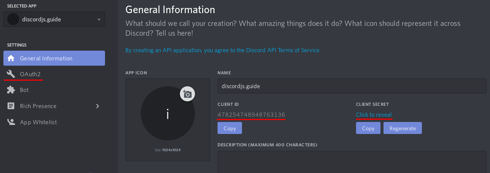
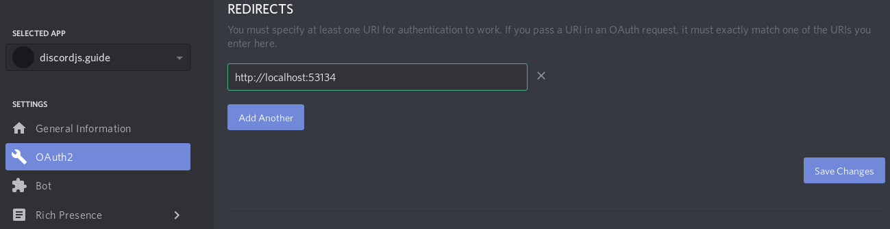
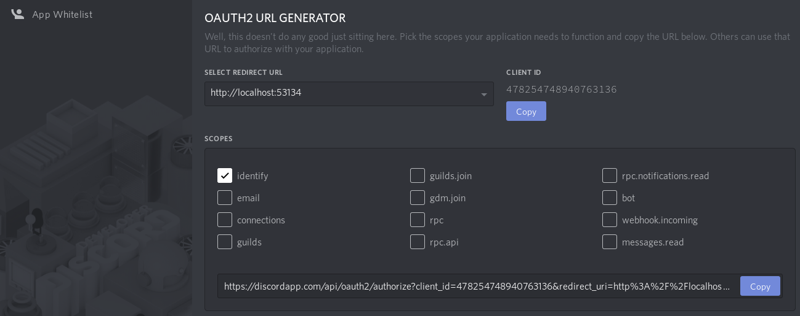

# Getting started with OAuth2
OAuth2 enables application developers to build applications that utilize authentication and data from the Discord API. This can be used to create things such as web dashboard to display user info, fetch linked third-party accounts like Twitch or Steam, access users' guild information without actually being in the guild, and much more. OAuth2 can greatly extend the functionality of your bot if used correctly.
# A quick example
# Setting up a basic web server
Most of the time, OAuth2 is used in websites to get information about its users from an external service. In this example, you will use Node.js' built-in http module to create a web server to use a user's Discord information to greet them. First, create a file named index.js which will be used to start the server.
const http = require('http');
const fs = require('fs');
const port = 53134;
http.createServer((req, res) => {
let responseCode = 404;
let content = '404 Error';
if (req.url === '/') {
responseCode = 200;
content = fs.readFileSync('./index.html');
}
res.writeHead(responseCode, {
'content-type': 'text/html;charset=utf-8',
});
res.write(content);
res.end();
})
.listen(port);
Right now, you have designated that the contents of an index.html file will be served to the user when they visit the root domain, so create an index.html file in the same directory with the following contents.
<!DOCTYPE html>
<html>
<head>
<title>My First OAuth2 App</title>
</head>
<body>
<div id="info">
Hoi!
</div>
</body>
</html>
You can start your server with node index.js. Once you start it, try connecting to http://localhost:53134 and you should see "Hoi!".
# Getting an OAuth2 url
Now that you have your web server up and running, it's time to get some information from Discord. Head over to your Discord applications and click "Create an application", where you'll be greeted with the following page:

Take note of the client id field, the client secret field, and the "OAuth2" link on the left side of the page. For now, click on "OAuth2" and add a redirect url to http://localhost:53134 like so:

Once you've added your redirect url, you will want to generate an OAuth2 url. Lower down on the page, you can conveniently find an OAuth2 Url Generator provided by Discord. Use this to generate a url for yourself with the identify scope.

The identify scope will allow your application to get basic user information from Discord. A list of all scopes can be found here.
# Putting it together
You have your website, and you have a url. Now you need to use those two things to get an access token. For basic applications like SPAs, getting an access token directly is enough to work with. If you want to do this, make sure the response_type in the url is token. However, this means you will not get a refresh token, which means the user will have to explicitly re-authorize when this access token has expired.
After you change the response type, you can test the url right away. Try visiting it in your browser and you will be directed to a page that looks like this.
You can see that by clicking Authorize, you are allowing the application to access your username and avatar. Once you click through, you should be redirected to the redirect url with a fragment identifier appended to it. You now have an access token and can make requests to Discord's API to get information on the user. Modify index.html to add your OAuth2 url and to take advantage of the access token if it exists. Even though URLSearchParams is for working with query strings, it can work here because the structure of the fragment follows that of a query string after removing the leading "#".
<!DOCTYPE html>
<html>
<head>
<title>My First OAuth2 App</title>
</head>
<body>
<div id="info">
Hoi!
</div>
<a id="login" style="display: none;" href="your oauth2 url here">Identify Yourself</a>
<script>
window.onload = () => {
const fragment = new URLSearchParams(window.location.hash.slice(1));
if (fragment.has("access_token")) {
const accessToken = fragment.get("access_token");
const tokenType = fragment.get("token_type");
fetch('https://discord.com/api/users/@me', {
headers: {
authorization: `${tokenType} ${accessToken}`
}
})
.then(res => res.json())
.then(response => {
const { username, discriminator } = response;
document.getElementById('info').innerText += ` ${username}#${discriminator}`;
})
.catch(console.error);
}
else {
document.getElementById('login').style.display = 'block';
}
}
</script>
</body>
</html>
Here you just grab the access token and type from the url if it's there and use it to get info on the user, which is then used to greet them. In the following sections, we'll go over various details of Discord and OAuth2.
# More details
# The state parameter
OAuth2's protocols provide a state parameter which is supported by Discord. This is used to help prevent CSRF attacks and can also be used to represent the state of your application. This should be generated per user and appended to the OAuth2 url. For a very basic example, you can use a randomly generated string encoded in Base64 as the state parameter.
function generateRandomString() {
const rand = Math.floor(Math.random() * 10);
let randStr = '';
for (let i = 0; i < 20 + rand; i++) {
randStr += String.fromCharCode(33 + Math.floor(Math.random() * 94));
}
return randStr;
}
// ...
// generate and store the string
const randStr = generateRandomString();
localStorage.setItem('stateParameter', randStr);
document.getElementById('login').href += `&state=${btoa(randStr)}`;
When you visit a url with a state parameter appended to it and then click Authorize, you'll notice that after being redirected, the url will also have the state parameter appended to it, which you should then check against what was stored. You can modify the script in your index.html file to handle this.
const fragment = new URLSearchParams(window.location.hash.slice(1));
if (fragment.has('access_token')) {
const urlState = fragment.get('state');
const stateParameter = localStorage.getItem('stateParameter');
if (stateParameter !== atob(decodeURIComponent(urlState))) {
return console.log('You may have been clickjacked!');
}
}
TIP
Don't forgo security for a tiny bit of convenience!
# OAuth2 flows
What you did in the quick example was go through the implicit grant flow, which passed the access token straight to the user's browser. This is great and simple, but you don't get to refresh the token without the user and it is less secure than going through the authorization code grant. This involves receiving an access code, which is then exchanged by your server for an access token. Notice that this way, the access token never actually reaches the user throughout the process.
# Authorization code grant
Unlike the quick example, you need an OAuth2 url where the response_type is code. Once you've obtained it, try visiting the link and authorizing your application. You should notice that instead of a hash, the redirect url now has a single query parameter appended to it like ?code=ACCESS_CODE. Modify your index.js file to pull the parameter out of the url if it exists. You can use the url module to do this for us.
const url = require('url');
// ...
const urlObj = url.parse(req.url, true);
if (urlObj.query.code) {
const accessCode = urlObj.query.code;
console.log(`The access code is: ${accessCode}`);
}
if (urlObj.pathname === '/') {
responseCode = 200;
content = fs.readFileSync('./index.html');
}
Now you have to exchange this code with Discord for an access token. To do this, you need your client_id and client_secret. If you've forgotten them, head over to your applications and get them. You can use node-fetch to make requests to Discord; you can install it with npm i node-fetch.
Require node-fetch and make your request.
const fetch = require('node-fetch');
// ...
const data = {
client_id: 'your client id',
client_secret: 'your client secret',
grant_type: 'authorization_code',
redirect_uri: 'your redirect uri',
code: accessCode,
scope: 'the scopes',
};
fetch('https://discord.com/api/oauth2/token', {
method: 'POST',
body: new URLSearchParams(data),
headers: {
'Content-Type': 'application/x-www-form-urlencoded',
},
})
.then(res => res.json())
.then(console.log);
WARNING
The content-type for the token url must be application/x-www-form-urlencoded. This is why URLSearchParams is used.
Now try visiting your OAuth2 url and authorizing your application. Once you're redirected, you should see something like this in your console.
{ "access_token": "an access token",
"token_type": "Bearer",
"expires_in": 604800,
"refresh_token": "a refresh token",
"scope": "identify" }
Now that you have an access token and a refresh token, try fetching the user's information. It's the exact same as how it was done in the html file.
fetch('https://discord.com/api/oauth2/token', {
method: 'POST',
body: data,
})
.then(res => res.json())
.then(info => fetch('https://discord.com/api/users/@me', {
headers: {
authorization: `${info.token_type} ${info.access_token}`,
},
}))
.then(console.log);
TIP
To maintain security, store the access token server side but associate it with a session ID that you generate for the user.
# Additional reading
RFC 6759
Discord Docs for OAuth2
# Resulting code
If you want to compare your code to the code we've constructed so far, you can review it over on the GitHub repository here .